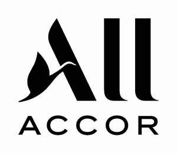

Trade Mark Journal No.2026/001 2 January 2026
UK00004308447 10 December 2025 (35,36,43)

International priority date claimed: 8 July 2025
(France)
(5162651)
- Class 35
- Business management; business administration; business management assistance and administrative services; commercial management and development assistance; business management and organization consultancy; office functions; advertising; efficiency experts and business information; business management and organization consultancy; administrative assistance in managing calls for tender; opinion polling; business inquiries; business research; business expertise services; economic forecasting; market research; projects (business management assistance); accounting; employment agencies; business data search in computer files for others; collection and systematization of data in a central file; computerized file management; creation of a photograph library, namely collection, compilation and systematic ordering of images in a central file; advertising in relation to the organization and management of hotel establishments; dissemination of advertisements and advertising matter; publication of publicity texts; rental of advertising space; market research; sales promotion for others; consultancy in the field of marketing, advertising and corporate communications; communication agency (public relations), commercial information agency; rental of office machines and equipment; organization of trade fairs for commercial or advertising purposes; organization of exhibitions for commercial purposes; advertising material rental; retail services in relation to clothing, lighters, travelling bags of leather, pocket wallets of leather, purses of leather, key cases of leather, umbrellas, glasses, bath towels, dressing gowns, golf balls, computer accessories, tableware articles, mattresses, beds, bed linen; business management of hotels; business management assistance and consultancy in business management and organization, in the field of environmental protection and sustainable development; studies, information and consultancy in the field of improvement of and compliance of working conditions, namely consultancy in relation to personnel management and human resources management; office functions for establishing, promoting, advancing, co-ordinating and supervising community services and for promoting and facilitating culture, work integration and mutual humanitarian assistance; management of real estate affairs and real estate business management, including management of hotels, motels, hotel complexes, apartments and hotel residences; business consultancy and providing of business information, business promotion in all forms and on all kinds of media, including via a computer communications network (the internet or an intranet), and in particular by providing privileged user cards; organization and management of business customer loyalty operations in particular by means of loyalty cards; joint purchasing program management services and other rebate programs; conducting and administration of affiliate programs allowing participants to access a range of goods, services and benefits provided by affiliated suppliers; providing, conducting and managing of affiliate programs, clubs membership programs and conducting clients loyalty programs; customer loyalty services for commercial, promotional and/or advertising purposes, namely frequent travellers programs; business consulting services in the field of travel and travel planning; providing airfare and hotel rate comparison information; business management and organization consultancy in relation to franchises; marketing and communications (marketing); consultancy and assistance in the management and organization of business affairs within a franchise network; services of a franchiser, namely business and industrial operation and management assistance; commercial operation of hotel complexes, motels, holiday homes, restaurants, cafeterias, tea rooms, bars (except clubs); organization of competitions for commercial or advertising purposes and for employee motivation; concierge services intended to meet people's needs, namely intermediation services of clients with service providers; implementing on-site company concierge services, via telephone or the Internet, namely commercial intermediation services, administrative information and assistance in administrative formalities for others; assistance in accomplishing administrative formalities for installation work and subscribing to supply contracts, notably for gas, water, electricity, insurances, telephone and the Internet; administrative management of offices and of individual or collective workspaces; providing collective and shared workspace equipment (office machines and equipment); office machines and equipment rental; commercial intermediation services (concierge services); appointment scheduling services [office functions]; relocation services for businesses; home personal administrative assistance.
- Class 36
- Real estate affairs; real estate management; real estate administration; management of buildings, apartments and residential properties; apartment house management; management of apartments; financial and real estate management of housing and accommodation, such as hotels, motels, hotel complexes, apartments, hotel residences, tourist homes and other places of residence for holidays and leisure; sale and rental of accommodations, apartments, studios, in-hotel rooms, hotel complexes, hotel residences and other places of residence for holidays and leisure; rental and management of accommodations for others; rental of shared ownership real estate; organization of shared ownership real estate exchanges, namely shared ownership real estate management; real estate services based on holiday shared ownership; management and rental services of timeshare real estate; consultancy and assistance in the field of real estate; rental and provision of commercial properties, offices, office spaces and collective or individual work areas; rental and provision of common work areas or of work areas to be shared; rental of equipped offices; rental of real estate; management of real estate, commercial properties, offices and collective or individual work areas; real estate management services relating to premises or offices; rental of office spaces; rental of offices and collaborative work installation; providing collaborative work facilities equipped with private offices, office supplies, a mail service, a printing center, a reception office, a kitchen, meeting rooms, telecommunications hardware and other office infrastructures, namely rental of offices for co-working.
- Class 43
- Hotel services; restaurant services (providing food and drink); temporary accommodation; hotels; cafeterias, tea rooms, bars (except clubs) services; travel agency services, namely hotel room and temporary accommodations reservations for travelers; travel agency services, namely booking of restaurants and meals; provision of information relating to hotels, temporary accommodation and restaurants; reservation, loan and rental of rooms, halls and spaces for conferences and meetings; reservation, loan and rental of rooms, halls and spaces for seminars, banquets, cocktails and receptions; consultancy and advice (non-business) in the fields of hotels and restaurants; providing of temporary professional offices; rental of meetings or conference rooms and of other collective spaces; rental of chairs, tables, indoor furniture, drinking fountains, lighting apparatus, tableware and furniture for conferences; provision of community centers for social gatherings and meetings; provision of facilities for conferences, exhibitions and meetings; rental of facilities and rooms for professional and social events; child care services [crèche]; preparation of meals to be delivered at home; temporary or permanent accommodations services for the elderly and helpless people, namely retirement home services; nurseries; day-nursery [crèche]; childcare services in an individual or collective mode [crèche].
ACCOR
Representative: Boult Wade Tennant LLP